Diagnóstico em 4 Etapas: Transforme Sua Saúde de Vez!
Identifique, Compreenda, Melhore e Mantenha sua saúde em cada estágio dessa jornada.
Autoavaliação Detalhada
Realize uma autoavaliação abrangente para identificar sintomas e desafios de saúde.
Consultoria Personalizada
Nossa equipe oferece consultoria personalizada para entender suas necessidades específicas.
Plano de Ação Sob Medida
Com base em sua avaliação, desenvolveremos um plano de saúde adaptado às suas metas e necessidades individuais.
Monitoramento e Progresso Contínuo
Acompanharemos seu progresso e ajustaremos seu plano conforme necessário. Sua jornada rumo ao bem-estar está sempre evoluindo.